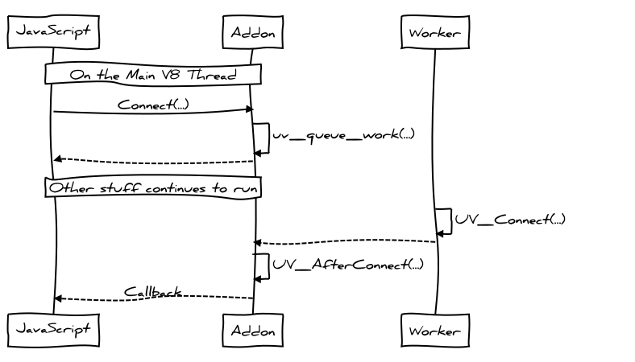
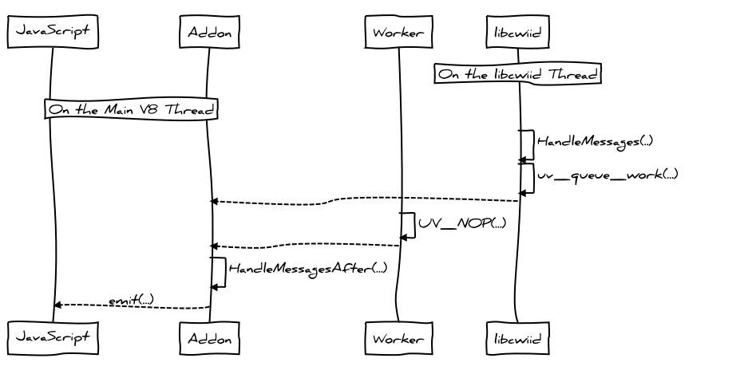
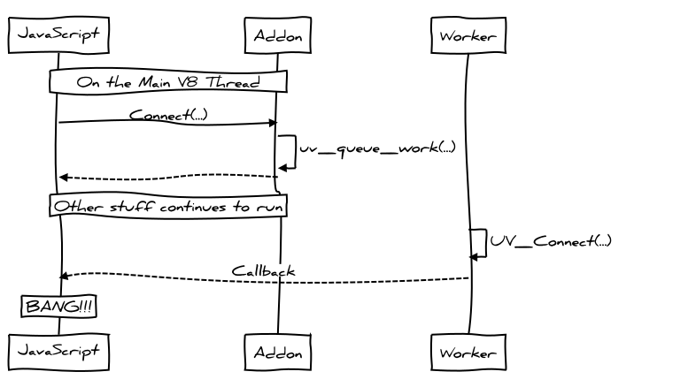

Node.js + Wiimote = Fun
How to write a custom Node.js addon that interfaces with a Nintendo Wii Remote
Andrew Brampton
October 4th, 2013
NationJS
Andrew Brampton
October 4th, 2013
NationJS

<script src="/socket.io/socket.io.js"></script>
1. var socket = io.connect();
2. socket.on( 'button', function( data ) {
3. console.log('button was pressed ', data);
4. });
1. var wii = require('nodewii')
2. , express = require('express')
3. , app = express()
4. , http = require('http')
5. , server = http.createServer(app)
6. , io = require('socket.io').listen(server);
7.
8. var wiimote = new wii.WiiMote();
9.
10. wiimote.connect( '00:00:00:00:00:00', function( err ) {
11. console.log('connected');
12.
13. wiimote.on( 'button', function( data ) {
14. io.sockets.emit('button', data);
15. });
16. });
{
"targets": [
{
"target_name": "nodewii",
"sources": [ "src/base.cc", "src/wiimote.cc" ],
"libraries": [ "-lcwiid", "-lbluetooth" ]
}
]
}
$ node-gyp configure
$ node-gyp build
var wii = require('/build/nodewii.node')
1. #include <node.h>
2. #include <v8.h>
3.
4. #include "../include/wiimote.h"
5.
6. void init(Handle<v8::Object> target) {
7. WiiMote::Initialize(target);
8. }
9.
10. NODE_MODULE(nodewii, init);
1. void WiiMote::Initialize (Handle<v8::Object> target) {
2. HandleScope scope;
3.
4. Local<FunctionTemplate> t = FunctionTemplate::New(WiiMote::New);
5.
6. constructor = Persistent<FunctionTemplate>::New(t);
7. constructor->SetClassName(String::NewSymbol("WiiMote"));
8.
9. NODE_SET_PROTOTYPE_METHOD(constructor, "connect", Connect);
10. NODE_SET_PROTOTYPE_METHOD(constructor, "disconnect", Disconnect);
11.
12. NODE_DEFINE_CONSTANT_NAME(target, "BTN_A", CWIID_BTN_A);
13. NODE_DEFINE_CONSTANT_NAME(target, "BTN_B", CWIID_BTN_B);
14.
15. target->Set(String::NewSymbol("WiiMote"),
16. constructor->GetFunction());
17. }
1. Local<FunctionTemplate> t = FunctionTemplate::New(WiiMote::New);
2.
3. constructor = Persistent<FunctionTemplate>::New(t);
4. constructor->SetClassName(String::NewSymbol("WiiMote"));
5.
6. target->Set(String::NewSymbol("WiiMote"),
7. constructor->GetFunction());
8. module.WiiMote = function WiiMote() {
9. // calls C++ WiiMote::New()
10. }
1. NODE_SET_PROTOTYPE_METHOD(constructor, "connect", Connect); 2. NODE_SET_PROTOTYPE_METHOD(constructor, "disconnect", Disconnect); 3. 4. NODE_DEFINE_CONSTANT_NAME(target, "BTN_A", CWIID_BTN_A); 5. NODE_DEFINE_CONSTANT_NAME(target, "BTN_B", CWIID_BTN_B);
6. module.WiiMote.connect = Connect; // Calls C++ Connect(...) 7. module.WiiMote.disconnect = Disconnect; // Calls C++ Disconnect(...) 8. 9. module.BTN_A = 0x0008; //CWIID_BTN_A; 10. module.BTN_B = 0x0004; //CWIID_BTN_B;
wiimote.connect( '00:00:00:00:00:00', function( err ) {
console.log('wiimote connected');
});
1. Handle<Value> WiiMote::Connect(const Arguments& args) {
2. HandleScope scope;
3.
4. if(args.Length() == 0 || !args[0]->IsString()) {
5. return ThrowException(Exception::Error(
6. String::New("MAC address is required and must be a String."))
7. );
8. }
9. if(args.Length() == 1 || !args[1]->IsFunction()) {
10. return ThrowException(Exception::Error(
11. String::New("Callback is required and must be a Function."))
12. );
14. }
15. String::Utf8Value mac(args[0]);
16. Local<Function> callback = Local<Function>::Cast(args[1]);
1. connect_request* ar = new connect_request();
2. ar->wiimote = wiimote;
3. str2ba(*mac, &ar->mac);
4.
5. uv_work_t* req = new uv_work_t;
6. req->data = ar;
7.
8. int r = uv_queue_work(uv_default_loop(), req,
9. UV_Connect, UV_AfterConnect);
10. if (r != 0) {
11. // Error handling
12. }
13.
14. return Undefined();
15. }
1. void WiiMote::UV_Connect(uv_work_t* req) {
2. connect_request* ar = static_cast<connect_request* >(req->data);
3.
4. ar->wiimote = cwiid_open(&ar->mac, CWIID_FLAG_MESG_IFC)
5. if(ar->wiimote) {
6. ar->err = 0;
7. } else {
8. ar->err = -1;
9. }
10. }
1. void WiiMote::UV_AfterConnect(uv_work_t* req, int status) {
2. HandleScope scope;
3.
4. connect_request* ar = static_cast<connect_request* >(req->data);
5.
6. WiiMote * wiimote = ar->wiimote;
7.
8. if (ar->err == 0) {
9. // Setup the callback to receive events
10. cwiid_set_data(wiimote->wiimote, wiimote);
11. cwiid_set_mesg_callback(wiimote->wiimote,
12. WiiMote::HandleMessages);
13. }
14. }
1. TryCatch try_catch;
2.
3. Local<Value> argv[1] = { Integer::New(ar->err) };
4. ar->callback->Call(Context::GetCurrent()->Global(), 1, argv);
5.
6. if(try_catch.HasCaught())
7. FatalException(try_catch);
8.
9. ar->callback.Dispose();
10. delete ar;

1. void WiiMote::HandleMessages(cwiid_wiimote_t *wiimote, int len, union cwiid_mesg mesgs[], struct timespec *timestamp) {
2. ...
3. // We need to pass this over to the nodejs thread, so it can create V8 objects
4. uv_work_t* uv = new uv_work_t;
5. uv->data = req;
6. int r = uv_queue_work(uv_default_loop(), uv,
7. UV_NOP, WiiMote::HandleMessagesAfter);
1. void WiiMote::HandleButtonMessage(struct timespec *ts, cwiid_btn_mesg * msg) {
2. HandleScope scope;
3.
4. Local btn = Integer::New(msg->buttons);
5.
6. Local argv[2] = { String::New("button"), btn };
7. MakeCallback(self, "emit", ARRAY_SIZE(argv), argv);
8. }
1. this.emit('button', CWIID_BTN_A);


ar->callback = Persistent<Function>::New(callback); wiimote->Ref(); wiimote->UnRef();